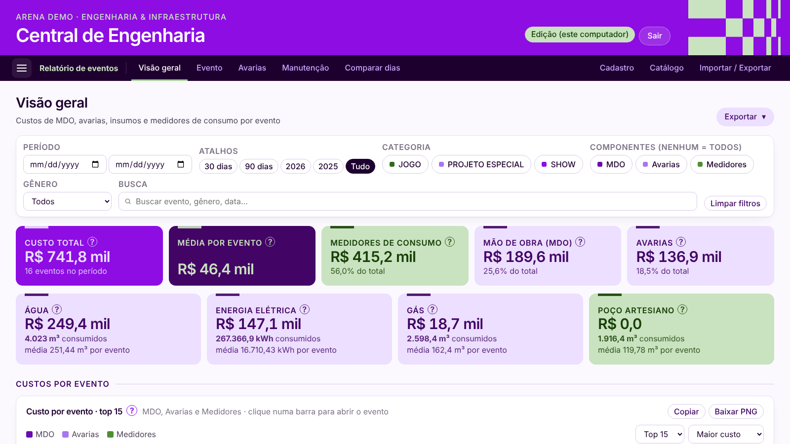

Destaque
Em uso1ª versão em ~2 dias
Central de Engenharia
Sistema web interno que substitui planilhas, macros e controles manuais da área de Engenharia de uma arena de eventos. Prints com dados fictícios.
- Problema
- Custos de eventos, medições de notas fiscais, budget e vencimento de documentos ficavam espalhados em planilhas e macros VBA que só eu sabia operar.
- Solução
- Um web app com 5 módulos: relatório de eventos (painéis de custos, avarias, manutenção e comparação entre dias), notas fiscais e contratos, budget, consumo de utilidades e vencimento de documentos. Inclui importação de planilhas, exportação em Excel e PDF, contas com perfis e histórico de alterações.
- Como usei IA
- Desenvolvido com o Claude Code como agente: escrevi especificações em linguagem natural, revisei o código gerado, testei com dados reais e iterei módulo a módulo.
- Resultado
- O relatório pós-evento caiu de 1h30 para 30 minutos (de 4h a 10h economizadas por mês), a montagem da planilha passou a ser feita por um colega, e as medições de NF ficaram num só lugar, com consulta por período e controle de prazo. Usado por cerca de 20 pessoas de diferentes áreas.
- Python
- Flask
- SQLite
- JavaScript
- Chart.js
- Claude Code